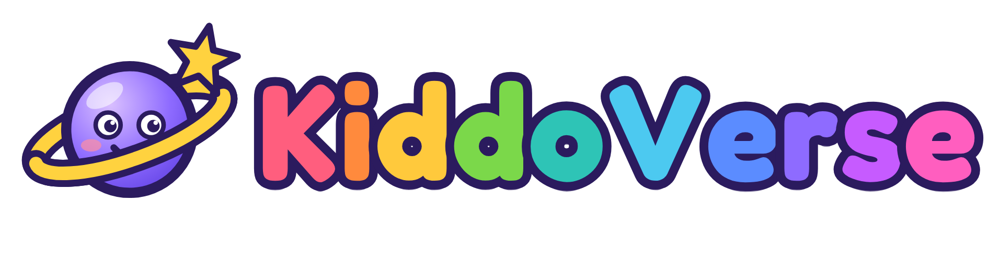
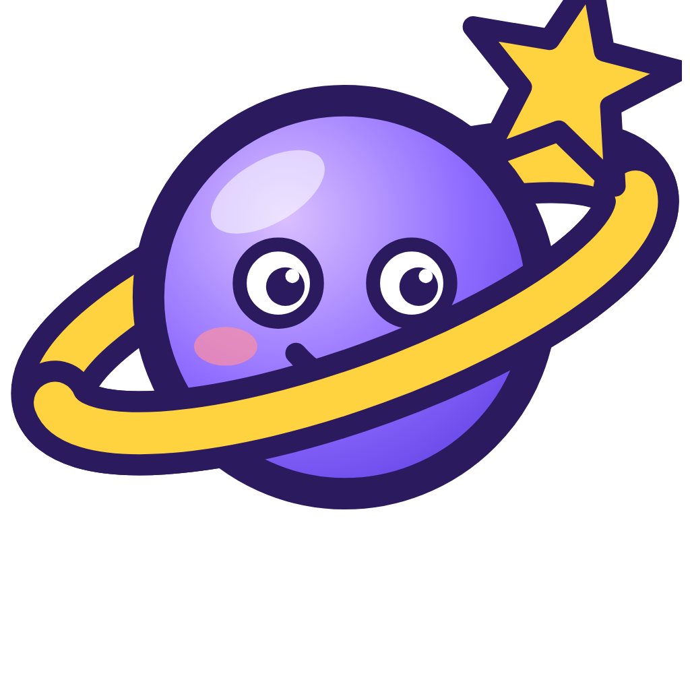
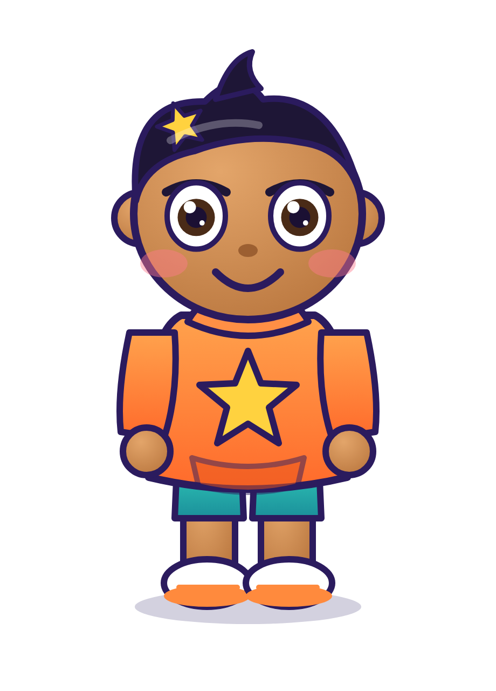
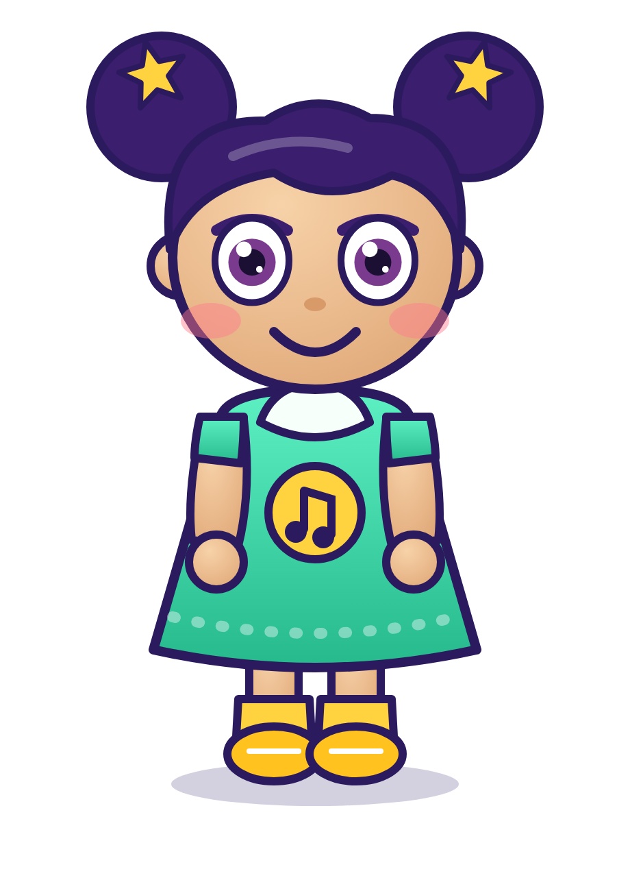
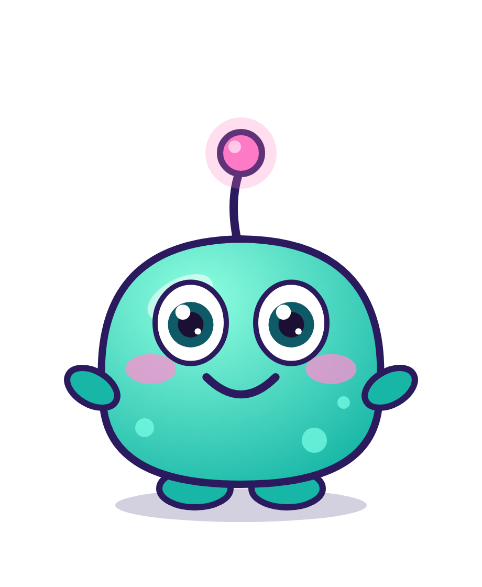
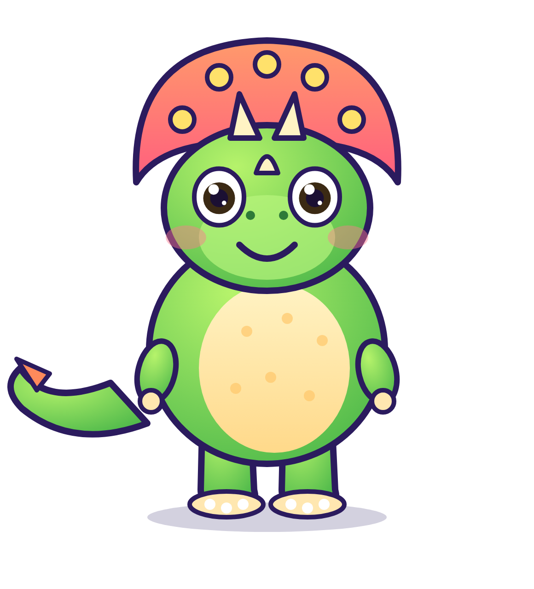
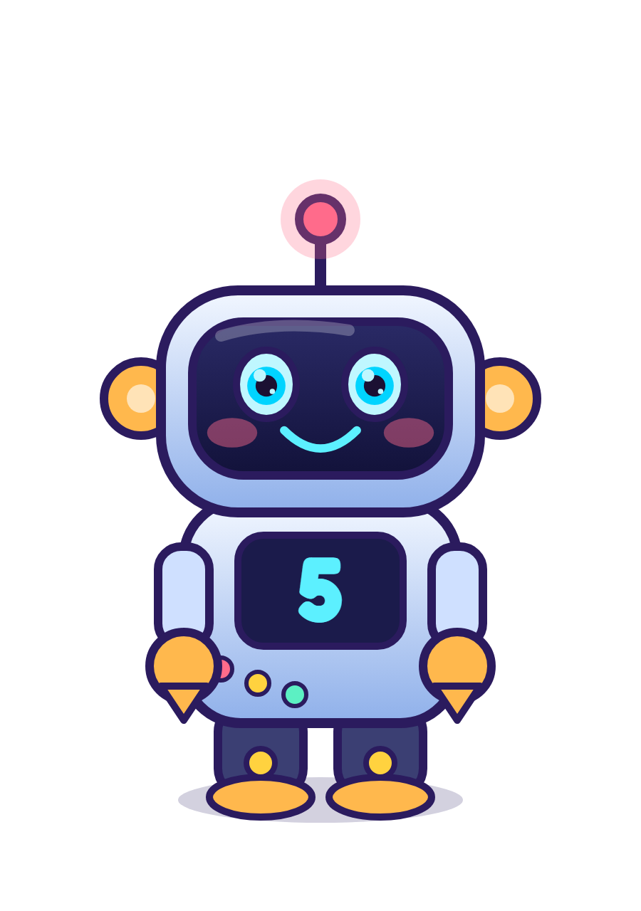
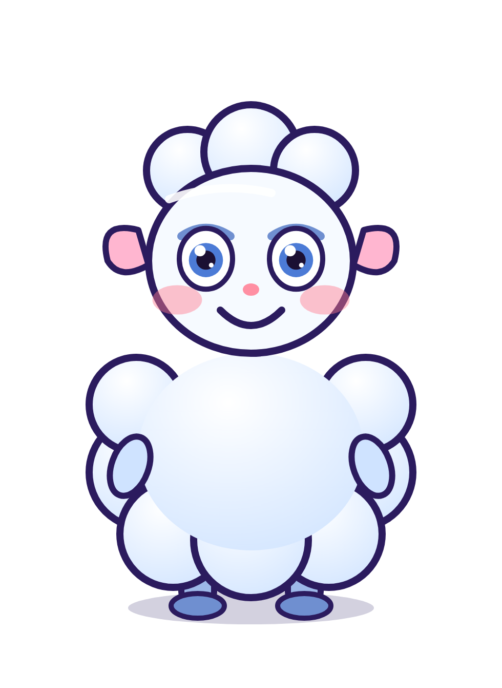

The world, the crew, the sound, the look — plus the plan for getting it seen. Built for global families, with original characters, music and animation.
I searched while building this. “KIDDOVERSE” is already a registered US trademark (22LEARN, LLC · Reg. No. 5762831 · covers downloadable game software, registered 28 May 2019) and there are at least two existing “Kiddoverse” toddler-learning apps (App Store / Google Play, one is kidSAFE-certified). You asked for this name and I used it — the whole project treats the name as one variable so changing it costs one re-render, not a rebuild. Because your brief says the brand will expand into apps and games (exactly what that registration covers), the risk is real, not theoretical. See §9 for what to do (this is not legal advice — a trademark attorney or a proper clearance search should make the final call).
Honest limits: I can’t see your channel analytics, so this is a playbook, not a promise. Views come from quality + consistency + packaging; the plan below maximises all three but nobody can guarantee a number.
“Every song is a trip — and everyone is welcome aboard.”
KiddoVerse is a pocket-sized galaxy of little worlds. A crew of seven friends hops on the Zoomie (a rocket-bus) and visits a new Pocket World in every song, learning something and feeling something on the way.
BrightKindCurious
Voice: warm, playful, never sarcastic, never scary. Short sentences. Sing-along-able. A grown-up should enjoy it on the 20th replay.
The brand is deliberately placeless: a pocket galaxy, a mixed-heritage crew, kid-universal themes (colours, counting, feelings, shapes, friendship). Culture appears as guest worlds — e.g. “Jollof Jamboree” (West Africa), “Lantern Lane” (East Asia), “Samba Sky” (Brazil), “Taco Twirl” (Mexico), “Bhangra Bazaar” (South Asia) — one-off episodes where the crew visits and the music/colours change. That lets African/Nigerian stories shine naturally without defining the whole brand.
Primary logo — the planet mascot (“Orbie”) + rainbow wordmark. Fredoka (SIL Open Font License — free for commercial use).

Icon / avatar — use for channel profile pictures, app icon, watermark.
Rule: every character has a bold dark-indigo outline (#2B1B5E, 6–8 px at 1080p); backgrounds are soft, outline-free paintings so the cast always pops. High-key, saturated, never muddy.
Fredoka Bold — logo, titles, captions.
Baloo 2 ExtraBold — small labels, taglines.
Captions: 70 px, white with a thick indigo stroke; the sung word turns sunshine-yellow (echo/response lines turn pink).
Three rising notes E – G – C (“Kid – do – verse!”) on glockenspiel + marimba, then a sparkle. It opens the video, is the chorus hook, ends the video, and should open every KiddoVerse piece. Kids learn brands by ear first.
Each one covers a different part of childhood: leadership, music, humour, strength, logic, feelings — and the ride that connects them. (Matches your template: name, age/type, personality, appearance, strength, weakness, favourite activity, catchphrase, role, relationships, signature sound.)






Kiko starts it, Luma sings it, Bloop breaks it, Rumble carries it, Gizmo explains it, Nimbus feels it, Zoom takes everyone there. Every episode idea can be told by giving each of them one job — and a kid can pick a “favourite” in seconds, which is what turns viewers into fans (and toys, books, apps later).
The KiddoVerse is a glowing pocket galaxy lit by the KiddoStar. Each Pocket World gives the crew a Spark; four Sparks together light the KiddoStar. In the first video the sparks are the four lessons: colours → counting → feelings → shapes, and the final message is “every one of us is a star”. Zoom’s “rainbow fuel” is made from kindness, so every story has a built-in moral without lecturing.
| World | Look | Teaches | Used in |
|---|---|---|---|
| Rainbow Hills | Sunny hills, big rainbow | Colours | Video 1 ✓ |
| Dino Valley | Volcano, ferns, eggs | Counting 1–5 | Video 1 ✓ |
| Cloud Kingdom | Cloud castle, rain & sun | Feelings | Video 1 ✓ |
| Robot Workshop | Gears, screens, conveyor | Shapes | Video 1 ✓ |
| Wiggle Stage | Disco lights | Movement, left/right | Video 1 ✓ |
| Ocean Deep | Glow reef, whale taxi | Animals, sea words | Idea |
| Candy Kitchen | Giant cupcakes | Sharing, fractions (½) | Idea |
| Moon Library | Dreamy reading room | Letters, sleep songs | Idea |
| Jungle Drumbeat | Drums, parrots | Rhythm, animals | Idea |
| Festival Street (guest worlds) | Rotating cultures | Food, music, hello-words | Idea |
I measured the file you gave me (172 s, 1280×720, 24 fps) frame-by-frame for structure — pacing, repetition, captions, audio level. Structure and technique can be learned; characters, songs, lyrics, logos and melodies are protected, so none of those were used.
| What I measured | Reference | What it means | KiddoVerse |
|---|---|---|---|
| Shots | 55 cuts · avg 3.1 s · median 2.5 s (0.8–14 s) | Constant visual change; long hold only at the very end | 96 shots · avg 2.0 s, camera always drifting |
| Cut density | 7 / 11 / 10 / 10 / 14 / 4 cuts per 30 s | Pace builds toward the end, then calms | Dance break and finale are the fastest sections |
| Structure | Logo sting → one hook repeated ~4× with a swapped word → logo outro | Repetition = predictability = comfort (and easy sing-along) | Hook chorus ×5 + 4 different verses so it never gets stale |
| Captions | Big bottom lyrics, alternating pink / green | Sing-along + helps non-native & hearing-impaired viewers | Karaoke captions; sung word turns yellow, echoes pink |
| Look | High-key pastel, big faces, close-ups, slow push-ins | Faces = emotional hook for toddlers | Same principles, original 7-character cast, outlined “sticker” style |
| Audio | Mean volume ≈ −15 dB, simple bright instruments | Loud enough for phones, gentle for kids | −13 LUFS master, true peak −1.9 dB |
| Learning | One micro-habit (washing) | Parents choose it for usefulness | Four learning goals + a feelings song + a dance |
No characters, song, melody, lyrics, logo, colour-caption identity, setting or catch-phrase from the reference. Original music (synthesised from code), original lyrics, original characters and a new logo. This is both the legal-safe and the brand-safe approach: an imitation can never become the name kids ask for.